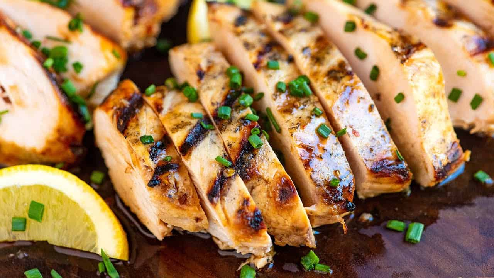

Grilled Chicken Recipe

Recipe Description
Today, we are going to learn how to make a Classic Healthy Meal! Grilled Chicken!
Grilled Chicken is a simple, protein packed, and super healthy dish. It is very filling, low calorie and today we will be showing you how to do it step by step!
Ingredients
- Chicken
- Olive Oil
- Salt & Pepper
Steps
- Grab two pieces of chicken breast
- Season with salt & pepper
- Add olive oil to a pan and place on medium heat for 5 minutes
- Add chicken breasts to pan and flip every 4 minutes
- Use thermometer to check if chicken on thickest side is at 165 degrees
- Remove and place on cuttin board
- Slice chicken and then place onto serving plate
- Enjoy!
Back To Main Page